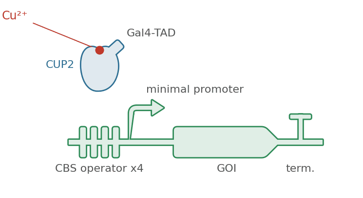
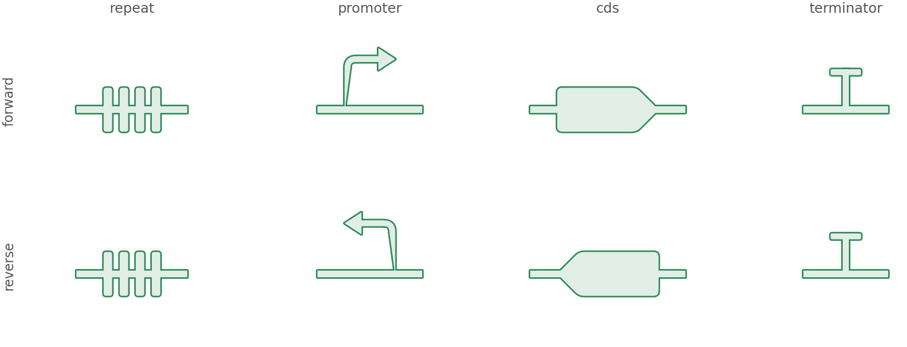
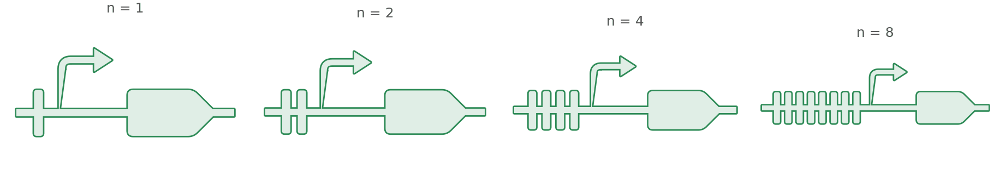
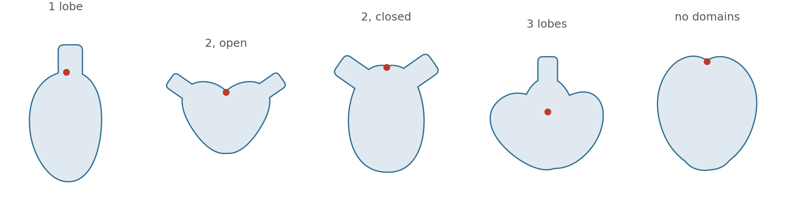
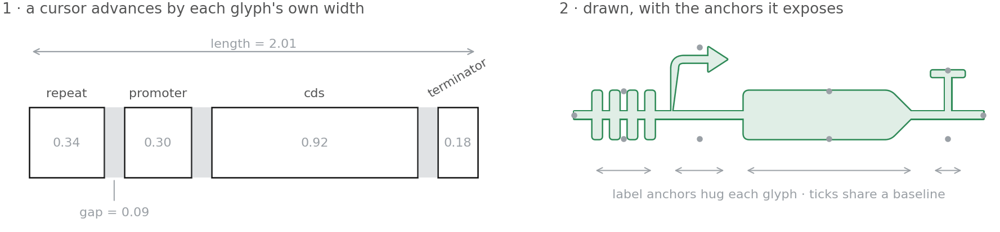

All examples Genetics
Inducible construct
A construct is glyphs laid along a line, each taking its own width — and the protein that switches it on.
Trackgenetics.Repeatgenetics.Promotergenetics.CDSgenetics.Terminatorgenetics.Protein

Every knob on this page is a count or a length somebody currently draws by hand: your repeat number, your insert, your domain list.
The vocabulary

How many repeats

The protein it encodes

What a track does

- A glyph brings its own width; the track only advances a cursor and leaves
gapbetween neighbours. - The anchors are the labels' business. No text is drawn by the library — a name is the author's claim.
Drawing one
import biodraw as bd
from biodraw.genetics import CDS, Promoter, Protein, Repeat, Terminator
track = bd.Track([
Repeat(n=4, label="CBS operator"), # n is the biology: 4xUAS, (etr)8
Promoter(label="minimal promoter"), # strand=-1 turns it round
CDS(width=0.92, label="GOI"), # the point says which way it reads
Terminator(),
], gap=0.09) # page between neighbours
cup2 = Protein(
lobes=2, # 1 is an oval, 2 a clamshell, 3+ a complex
open_deg=30.0, # how far the lobes hinge apart
tags=(42.0,), # a domain tag leaves the body at this angle
at=(0.17, 0.52), # over the operator — that is your claim
scale=0.62,
)
for shape in (track, cup2):
shape.draw(ax=ax, wall_lw=1.0)
# The ligand is a dot at an anchor, and the labels are your own text.
ax.plot(*cup2.anchor("cleft").xy, "o", ms=5.5)
for a in track.anchors("tick"):
ax.text(*a.offset(0.06), a.meta["label"], ha="center", va="top")Every figure above is output, not a stored asset —
drawn by inducible_construct/build.py, in Python, on a matplotlib axes.